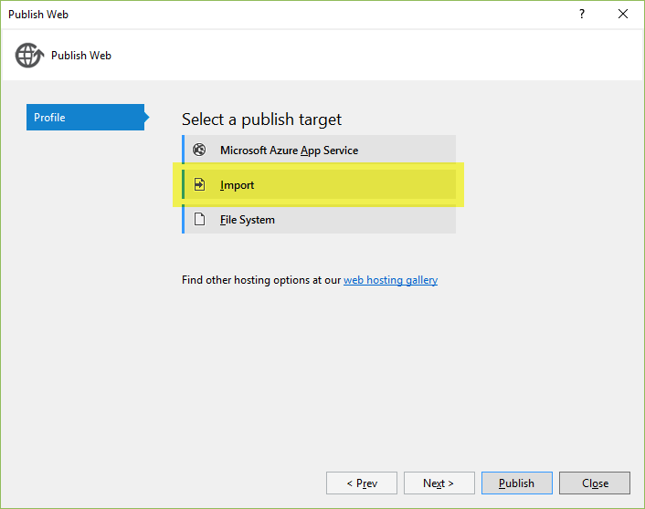

Publishing to IIS with Web Deploy using Visual Studio¶
Publishing an ASP.NET Core project to an IIS server with Web Deploy requires a few additional steps in comparison to an ASP.NET 4 project. We are working on simplifying the experience for the next version. Until then you can use these instructions to get started with publishing an ASP.NET Core web application using Web Deploy to any IIS host.
To publish an ASP.NET Core application to a remote IIS server the following steps are required.
- Configure your remote IIS server to support ASP.NET Core
- Create a publish profile
- Customize the profile to support Web Deploy publish
In this document we will walk through each step.
Preparing your web server for ASP.NET Core¶
The first step is to ensure that your remote server is configured for ASP.NET Core. At a high level you’ll need.
- An IIS server with IIS 7.5+
- Install HttpPlatformHandler
- Install Web Deploy v3.6
The HttpPlatformHandler is a new component that connects IIS with your ASP.NET Core application. You can get that from the following download links.
In addition to installing the HttpPlatformHandler, you’ll need to install the latest version of Web Deploy (version 3.6). To install Web Deploy 3.6 you can use the the Web Platform Installer. (WebPI) or directly from the download center. The preferred method is to use WebPI. WebPI offers a standalone setup as well as a configuration for hosting providers.
Configure Data Protection¶
To persist Data Protection keys you must create registry hives for each application pool to store the keys. You should use the Provisioning PowerShell script for each application pool you will be hosting ASP.NET Core applications under.
For web farm scenarios developers can configure their applications to use a UNC path to store the data protection key ring. By default this does not encrypt the key ring. You can deploy an x509 certificate to each machine and use that to encrypt the keyring. See the configuration APIs for more details.
Warning
Data Protection is used by various ASP.NET middlewares, including those used in authentication. Even if you do not specifically call any Data Protection APIs from your own code you should configure Data Protection with the deployment script or in your own code. If you do not configure data protection when using IIS by default the keys will be held in memory and discarded when your application closes or restarts. This will then, for example, invalidate any cookies written by the cookie authentication and users will have to login again.
You can find more info on configuring your IIS server for ASP.NET Core at Publishing to IIS. Now let’s move on to the Visual Studio experience.
Publishing with Visual Studio¶
After you have configured your web server, the next thing to do is to create a publish profile in Visual Studio. The easiest way to get started with publishing an ASP.NET Core application to a standard IIS host is to use a publish profile. If your hosting provider has support for creating a publish profile, download that and then import it into the Visual Studio publish dialog with the Import button. You can see that dialog shown below.
After importing the publish profile, there is one additional step that needs to be taken before being able to publish to a standard IIS host. In the publish PowerShell script generated (under PropertiesPublishProfiles) update the publish module version number from 1.0.1 to 1.0.2-beta2. After changing 1.0.1 to 1.0.2-beta2 you can use the Visual Studio publish dialog to publish and preview changes.